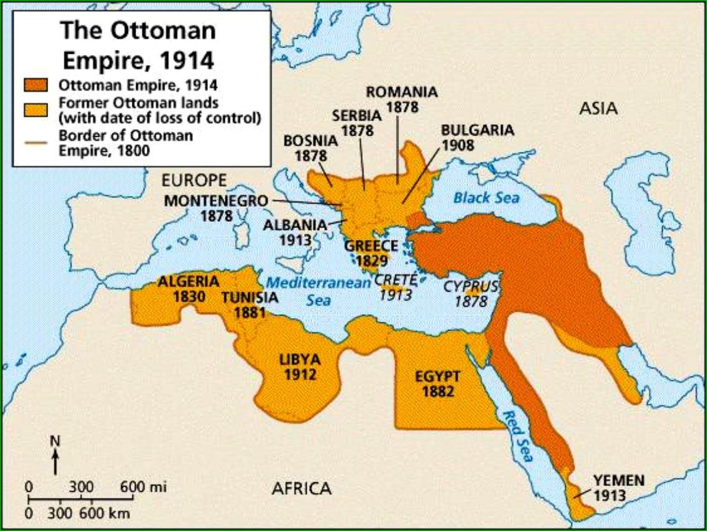

1815–1917
1815–1917: Commerce, Missions, and the Limits of American Power
<<<<<<< HEAD9Commerce and the Ottoman Empire
Despite the founding of America on the principles of freedom and republicanism, its dealings with the Ottoman Empire were dictated by commerce and diplomacy. The American businessmen desired to have access to the markets of the Ottomans while diplomats wanted to ensure safety of the Americans and their activities. Signing of the Treaty of Commerce and Navigation in 1830 and opening of diplomatic relations in 1830 and opening of diplomatic relations in 1831 showed readiness of Washington to work with an imperial regime despite the difference in political structures. Instead of trying to bring republicanism in the Ottoman Empire, the Americans paid more attention to economic and diplomatic ties.
10Missionaries, education, and American moral ambition
Protestant missionaries founded schools, presses, religious institutions, and medical enterprises, especially among Armenian and other Christian communities. The Syrian Protestant College opened in Beirut in 1866 and later became the American University of Beirut. Private religious and educational efforts helped create an American cultural presence beyond the government's political reach. Some missionaries valued education and reform; others reproduced paternalistic cultural assumptions. Their objectives were not identical to official Washington policy. This distinction helps explain why American moral ambition could coexist with limited government intervention.
11Cultural influence without territorial rule
American educators, merchants, and travelers often encountered the Ottoman world without the United States acting as a dominant military power comparable to Britain, France, or Russia. Religious and cultural encounters encouraged some Americans to imagine a special American role abroad. But the government generally prioritized access, citizens' protection, and diplomacy over directing Ottoman political development. The tension between ideals and interests sharpened only after the United States acquired greater ability to intervene.
12Ottoman crisis and World War I
The participation of the Ottoman Empire in World War I in 1914 posed additional problems for American foreign policy. Issues regarding the mistreatment of Armenians were of humanitarian interest to America, yet at the same time, the safety of Americans living and working in the empire needed to be considered. The U.S. declared war on Germany in 1917 but did not declare war on the Ottoman Empire, even after severing ties between them diplomatically. This demonstrates that while morality was taken into account, it did not always turn into governmental actions.
=======6Commerce and the Ottoman Empire
American involvement expanded through consular diplomacy, trade, and cultural activity rather than territorial intervention. The Ottoman Empire governed a diverse region including much of the eastern Mediterranean and Arab Middle East. U.S. merchants pursued access to markets while diplomats sought protections for citizens. The 1830 treaty of commerce and navigation and formal diplomatic relations in 1831 marked important developments. Washington did not seek to replace the Ottoman government with a republic. The relationship showed that diplomatic access and commercial protections could matter more immediately than the institutions of America's partners.
7Ottoman crisis and World War I
Ottoman reform, nationalist pressures, territorial losses, and European economic influence transformed the empire. It entered World War I in 1914 on the side of the Central Powers. The United States declared war against Germany in April 1917 but not against the Ottoman Empire, although diplomatic relations were severed. The war raised difficult questions about the future of imperial territories, and Wilson's approach brought international self-government into American diplomacy. That change leads directly to the postwar settlement.
>>>>>>> ff179e925e14bb0aebfd486c924b64a37c89ccab